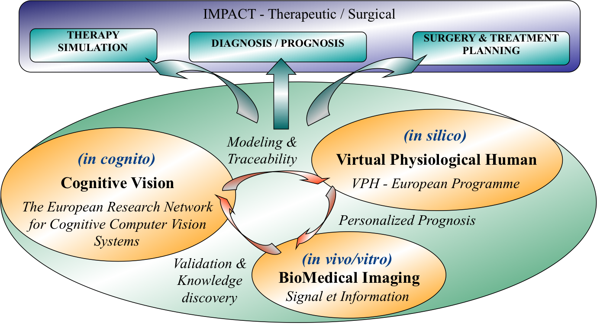

My research develops artificial intelligence methods for biomedical image analysis, computational pathology, spatial transcriptomics and multimodal medicine. The central objective is to connect tissue morphology, molecular information and clinical interpretation through explainable, robust and clinically meaningful AI systems.
Research Themes
Scientific Challenge
The core scientific challenge of my research is to design artificial intelligence systems that can analyze, understand and synthesize high-content biomedical images while remaining interpretable, robust and clinically useful.
This work is positioned at the intersection of computational pathology, microscopic biomedical image analysis, spatial transcriptomics, multimodal learning and responsible AI. It combines explicit biomedical knowledge, data-driven representation learning and human-in-the-loop validation to support translational medicine.

This vision is grounded in a tripolar paradigm connecting cognitive vision (in cognito), biomedical images and tissues (in vivo / in vitro), and computational modelling (in silico). The objective is to move from purely descriptive image analysis toward integrative models linking morphology, biophysics, molecular information and clinical decision-making.
Research Vision
Modern biomedical imaging is no longer limited to visual interpretation. Whole-slide imaging, molecular profiling, spatial omics, MRI, OCT, fundus imaging and functional imaging now offer complementary views of biological and pathological processes. The next generation of AI systems must therefore be able to integrate these heterogeneous sources while preserving traceability, uncertainty awareness and clinical interpretability.
My research aims to contribute to this transition by developing AI models that are not only accurate, but also explainable, reproducible, frugal and aligned with real clinical workflows. This includes deep learning, generative models, multimodal learning, physically inspired AI, knowledge-guided systems and uncertainty-aware decision support.
Specific Objectives
Spatial Transcriptomics
Predicting spatial transcriptomics from computational histopathology and tissue morphology.
Parkinson’s Disease
Predicting Parkinson’s disease propagation paths using diffusion MRI biomarkers.
Alzheimer’s Disease
Stratifying Alzheimer’s disease patients through morphological and topological characterization of tau pathologies.
Multimodal Neuroscience
Combining fMRI, microbiota and histology to uncover correlations and causal mechanisms in disease progression.
Ophthalmology
Discovering biomarkers from fundus images and OCT using deep learning and data-centric AI.
Blindness and Vision
Understanding perception in late blindness through fMRI analysis, machine learning and digital twins.
Assistive Navigation
Supporting visually impaired individuals using deep reinforcement learning in indoor and outdoor environments.
Trustworthy AI
Developing explainable, interpretable, frugal and responsible AI systems for biomedical applications.
From Biomedical Images to Integrative Pathology
Multiscale and multimodal biomedical image analysis, image synthesis, explainable AI and responsible artificial intelligence constitute the core methodological basis of this research program. Prognosis traceability and uncertainty management are central elements for maintaining a strong interaction with medical partners and enabling effective clinical translation.
Integrating microscopic and macroscopic modalities into next-generation imaging platforms requires moving from semiological image descriptors toward operational morphogenetic models that jointly consider morphology, biophysics, molecular profiles and clinical context. This requires close collaboration across computer science, pathology, neuroscience, biology and clinical medicine.